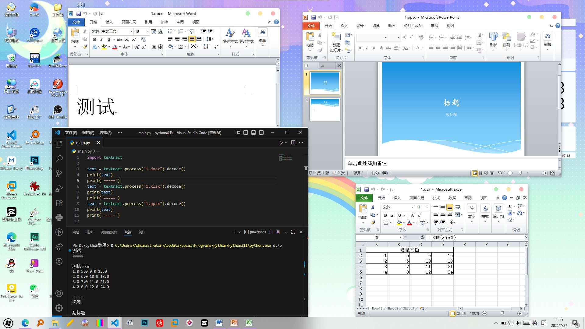

这是我第一次写这种风格的文章，如果大家喜欢我下次多做点，本教程适合有点Python基础但不多的人（比如我）
在日常生活中，我们常常需要用到各种Office文档，使用textract库可以轻松读取这些文件
准备工作
先安装Python，再执行命令：
pip install textract
尝试第一次调用
准备一个文件夹，在这个文件夹中创建一个Word文档
在主程序中这么写：
import textract
text = textract.process("1.docx").decode()
print(text)
这三句代码很简单，第一行代码引入textract模块，第二行代码用于处理1.docx这个文档（注意那个decode，没有它就会输出一些控制字符），第三行直接输出
不出意外的话，会直接print出“测试”二字（因为我文档里就是这么写的）
我们不妨扩写这个程序，让程序依次处理多个文档，看看最终输出结果
import textract
text = textract.process("1.docx").decode()
print(text)
print("=====")
text = textract.process("1.xlsx").decode()
print(text)
print("=====")
text = textract.process("1.pptx").decode()
print(text)
print("=====")

最终结果符合预期